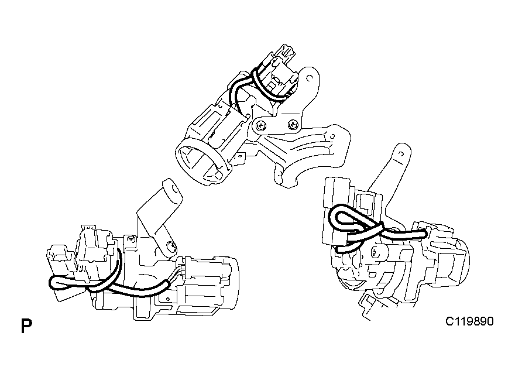

Steering Column Assembly: Reassembly
- INSTALL IGNITION SWITCH ASSEMBLY
- Install the ignition switch to the steering column bracket with the 2 screws.
- INSTALL UNLOCK WARNING SWITCH ASSEMBLY
- Install the unlock warning switch.
- Connect the unlock warning switch connector to the ignition switch.
- Using a new clamp, fix the wire harness of the unlock warning switch to the steering column bracket upper as shown in the illustration.NOTE: When fixing the wire harness, do not tighten the clamp too hard. It could damage the wire harness inside.
- INSTALL IGNITION SWITCH LOCK CYLINDER ASSEMBLY

Courtesy of © TOYOTA, LICENSE AGREEMENT TMS1002- Make sure that the ignition switch lock cylinder is in the ACC position.
- Install the ignition switch lock cylinder.
- INSPECT STEERING LOCK OPERATION
- Check that the steering lock mechanism is activated when the key is removed.
- Check that the steering lock mechanism is deactivated when the key is inserted and turned to the ACC position.
- INSTALL STEERING MAIN SHAFT ASSEMBLY
- Using a snap ring expander, install a new snap ring to the lower side.
- Install the steering main shaft.
- Using a snap ring expander, install a new snap ring to the upper side.
- INSTALL STEERING MAIN SHAFT BUSH
- Coat a new steering main shaft bush with molybdenum disulfide lithium base grease.
- Using SST and a hammer, tap in the steering main shaft bush.
SST 09612-22011
- INSTALL STEERING COLUMN UPPER WITH SWITCH BRACKET ASSEMBLY
- Temporarily install the steering column upper with switch bracket and steering column clamp upper with 2 new steering lock set bolts.
- Tighten the 2 steering lock set bolts until the bolt heads break off.